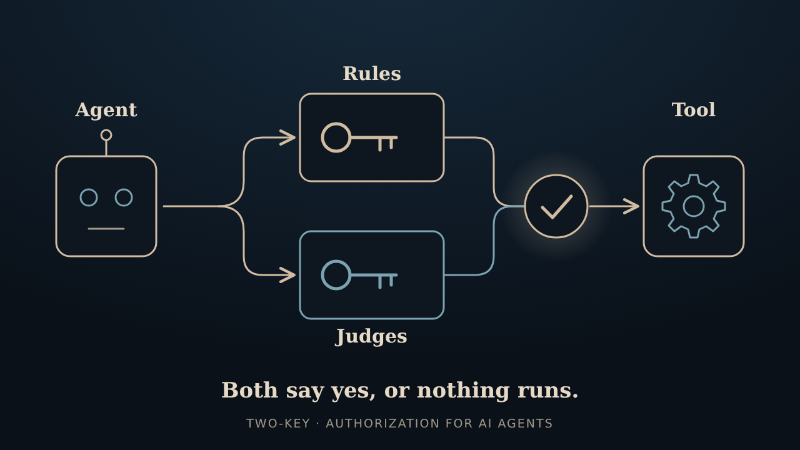
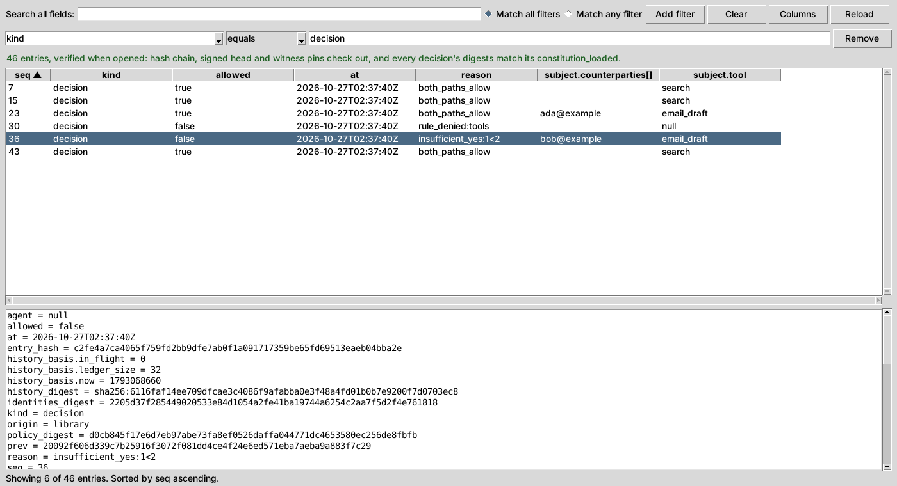
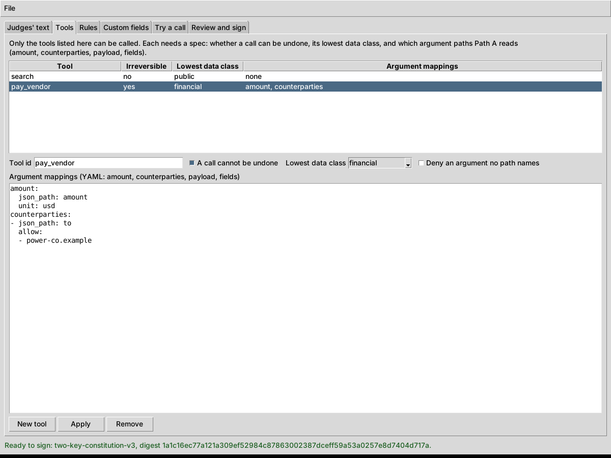

The short version
Two-Key is a small, open source take on AI agent security. An agent never holds the keys. It proposes an action, and two independent checks, a policy engine with hard rules and one or more LLM judges, both have to say yes before a single-use token lets the action happen. It's built for agents that use tools, so think payments, emails, or changes to a record, and it can sit in front of an existing MCP tool server. The code lives in two-key on GitHub. It grew out of the older two-key-concept repo, which is archived now, and its history came along.

What's a little different about it
Plenty of folks are working on AI agent security, and a lot of it is good. A few choices here are a bit unusual, though, so here's the short version.
- One key never listens to the agent. It checks the real arguments against hard rules and ignores whatever the agent says about them. If the claim and the actual bytes don't match, that's a no.
- The other key is the judges, and a judge can't be the agent in a different hat. At start-up it compares models, credentials, endpoints, and accounts. It refuses to run if a judge holds the agent's credential, and it grumbles on stderr about the lookalikes. The proxy also won't start if the agent is running as Two-Key's own account, or as an account that could change Two-Key's files. One judge is enough to start, and a stricter profile asks for judges from two different makers.
- Silence counts as no. A judge that's missing, confused, or too slow is not a yes, and a fault in the rules check is a deny.
- The door key is picky. It's only minted in one place, works once, expires fast, and fits only the exact action that was approved. The part that runs the tool can check it but can't make one. (It lives in the same process, so that's a rule of the API, not a locked vault.)
- Both checks answer. On a well-formed call, even when the rules say no, the judges still weigh in, so the log tells the whole story. That log is encrypted and hash-chained too.
- Facts come from your systems, not the agent. A rule like "this invoice matches its purchase order" can use a value your own code looks up, and it gets looked up again right before the tool runs.
- It sits in front of an MCP server. A proxy shows the agent only the tools you signed and runs every call through both keys. It can draft the tool specs from the server's own schemas, and you review and sign them.
- It borrows scanners instead of faking one. If you already run an antivirus or DLP product, Two-Key can call it before the keys decide. It doesn't scan anything itself.
- It can tell your SIEM. Each decision can be copied to syslog or an HTTPS webhook as it's written, with reason codes and digests but never the arguments. If the collector is down, decisions carry on.
- Judges remember. Each judge gets a short summary of recent decisions from the ledger, so a repeated bill or a pile of denied attempts looks odd instead of normal. It only holds codes, counts and amounts, never text an attacker wrote. Each judge's vote is also recorded, minus its reasoning text.
Not a replacement for a content filter, a DLP product, or user login. It works fine next to them.
Two little windows
Not everyone wants to read a ledger in a terminal or hand-edit YAML at midnight, so 0.8.0 adds two small desktop windows. Both are optional and both run on your own machine.

two-key ledger-view is a read-only look at the audit ledger. It checks the hash chain when it opens, and you can filter, search, and pick which columns to see.
two-key constitution-editor edits the judges' text, tools and rules, lets you try a call, and signs the result the same way sign-constitution does.Where two-key is headed
Okay, so there's a loose roadmap now. It's less a schedule and more a list of things we'd like to poke at next, roughly in the order they make sense. No dates, no promises, and the order can shuffle whenever a better idea shows up at 3 a.m.
- 0.4.0 The beta, under its own name Policy VM, one or more judges, single-use tokens, an encrypted ledger, and key backup and recovery.
- 0.5.0 MCP adapter A proxy in front of MCP tool calls, plus facts that come from your systems instead of the agent.
- 0.6.0 Scanner hooks and Windows Plug in the antivirus or data-leak scanner you already run. Windows works now, and judge connections get reused.
- 0.7.0 Ledger export for security monitoring The audit trail goes to your SIEM as it’s written. It’s also the first release on PyPI.
- 0.7.3 Easier set-up A two-key setup command, one-setting-at-a-time changes with an undo, and a principal key you can lock with a passphrase.
- Today · 0.8.0 Judges see history, and two little windows Judges get a summary of recent decisions, so a repeated bill or a burst of denials stands out. Each judge’s vote is recorded. One proxy per agent. A ledger viewer and a constitution editor, both small windows.
- Next · 0.9.0 The last beta An optional check on the tool side, a live run with the agent on another machine, a quickstart, and file formats frozen for 1.0.
- 1.0.0 Public review, then the first stable release A community review of 0.9.0, then 1.0. Community-reviewed, not audited.
- After 1.0 The grown-up stuff, not scheduled Certificates and recovery, quantum-resistant signatures, FIPS mode, a fuller local screen for configuring things, an optional reputation halt, and more field types.
The MCP proxy, the scanner hooks, the ledger export, the set-up commands and now the judge history have all shipped, and the package is on PyPI. Next is 0.9.0, the last beta, then a public review before 1.0. Before that review there's one more thing to test properly: an agent connecting from another machine. Today the proxy only talks over stdio, so that goes through SSH, and it's only been checked in one container. The bigger identity and crypto items wait until after 1.0.
Still pre-1.0 and still no independent audit, just maintainer review, live testing with real LLM judges and agents, and automated scanners. The full plan, nitty-gritty included, is in the roadmap in the repo. Everything is public on GitHub if you want to poke around.
Quick questions
How do you keep a prompt-injected AI agent from doing something dumb?
Two-Key never lets the agent hold the keys. The agent only proposes an action, and two separate checks have to say yes. The first is a rules-based policy engine: it ignores the chatty English and only looks at a few hard facts about the call, like which tool, how much money, what kind of data, who's on the receiving end, and whether it can be undone, plus any extra fields you define. If anything's off, or the engine hits an error, the answer is no. The second is one or more LLM judges, never the agent itself, who vote on whether the action fits what the owner wrote down in plain language. Only when both agree does a short-lived, single-use token get issued. A hijacked agent can still ask, it just can't act on its own say-so.
How is this different from a prompt-injection filter or a guardrails library?
Filters look at the text and ask whether it seems bad. Two-Key asks a different question: is this action allowed, whatever the text says? It checks the real arguments against hard rules, has independent judges weigh in, and only then hands over a single-use token. The two ideas get along fine, and you can run a filter in front of it.
What does it work with?
Any agent that can hand over its proposed action as data: Grok, ChatGPT, Claude, Gemini, or a local Ollama model. Judges can be xAI/Grok, OpenAI, Anthropic, Gemini, or Ollama too. It's Python 3.10 to 3.14 with one required dependency, and it's on PyPI now (0.8.0), so a plain pip install does it. There's an MCP proxy too, for putting it in front of an existing tool server.
Disclaimer
Everything here, including the code, documentation, and this page, is provided "as is," without warranty of any kind, express or implied, including fitness for a particular purpose, accuracy, or non-infringement. Insomniac-VibeLabs accepts no liability for any damages, losses, or other consequences arising from use of, or reliance on, any of it.
This is a hobby project and a beta. It hasn't had independent review, so don't count on it to protect, or pay for, anything that matters. See the repository for its license terms.